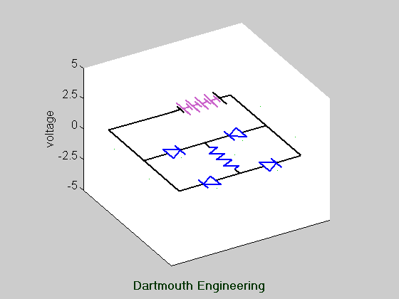

Bridge Rectifier Circuit.
This circuit takes an ac input voltage (represented by the battery
symbol), and produces a pulsating dc voltage across the load (resistor).
- Although the two ends of the resistor (load) may swing positive or
negative, the polarity of the voltage across the resitor is always
the same.
- The voltage at one end of the input voltage source is considered zero
volts, or ground, for this illustration. Note that the voltages at
the two ends of the resistor are not at ground; thus the circuit cannot have
a common ground between the input voltage source and the load.